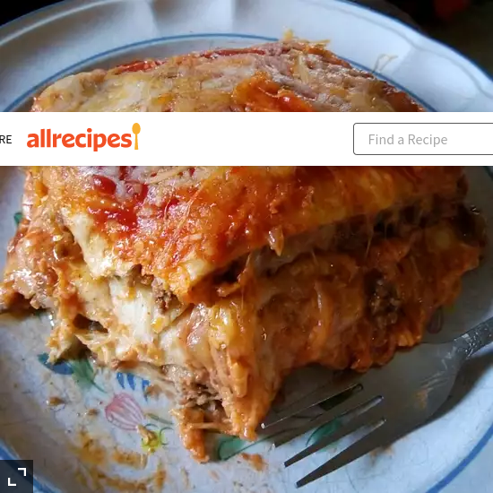

Ragu Bolognese

Description
Rezept für leckere Cevapcici aus dem Internet.
Das Gericht ist typisch für den Balkan und schmeckt besonders gut zu Djuvekreis, scharfer Paprikasauce oder gleichartiges.
Ingredients
- 500g gemischtes Hackfleisch
- 1 Zwiebel
- 2 Knoblauchzehen
- 1 Bund Petersilie
- 1 El Tomatenmark
- Pfeffer nach Geschmack
Steps
- Zwiebeln
- Hackfleisch darin rundherum anbraten
- gehackten Zwiebeln und die gehackte Petersilie dazugeben
- Knoblauch in feinen Scheiben und Tomatenmark dazu rühren und mitbraten
- Dosentomaten aufgießen, salzen und pfeffern
- Rotwein nach Belieben beifügen